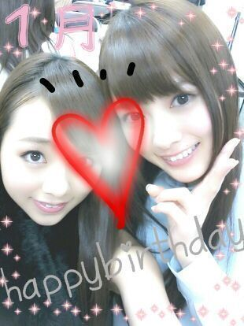
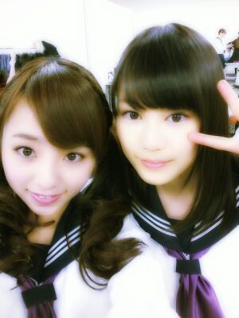

ほおっほーーーい☆☆☆
ろーーてぃこ丸だよぉーーー(>ω<)
↑ 変にハイテンション 笑
１月生まれの皆ちゃま。☆☆
お誕生日おめでとう
ございますっ ! !
いい１年になります様に...〃ω〃

・・・・
やっぱ まいやん♪の
可愛さには びびるってぃー。
たまげたよ あーしはっ(・∇・)♪
あっ、そーいえば
最近 お誕生日をむかえた
メンバーは
みさみさですっ(・ω・)ノ
二十歳 おめでとうっ☆☆
タイミングを逃してしまい
プレゼント渡せてないのだ...
気に入ってくれるかなー`・ω・?
ドキドキ。♪
ああっ!! )))
皆プレゼントあげること
みさ♪には内緒よっ >ω<))
んー
絶対誰かちくるでしょぉ〜
(-ω-)?
がちな方で内緒にしといて
欲しいです(*^^*)てへ
って、みさがこの記事
読んぢゃってたら...
どーしよーもない´∀`))笑
みさみさ好きだwwww
(>∇<))
えりかとの写メ
もう１枚とったので
載せちゃいますヨット。☆

...
前の記事のコメント
全て読みました。
皆 本当 いい人。
やっぱり大好き。
嬉しいきもちっ(>ω<)
ちゃんと皆様の思い
伝わりました。
１人１人のコメントが
１つ１つ全部
まひろのエネルギーに
なりました(>ω<)
ありがとうございます^^
私服も褒めてくれて
ありがとうございます(*^^*)
なんか、
やばい(;゜∇゜)
まひろ 元気沸いてる!
今年いいかもしれない !!
おやすみなさいっε=┏( *'∀'*)┛
Rotty★★★